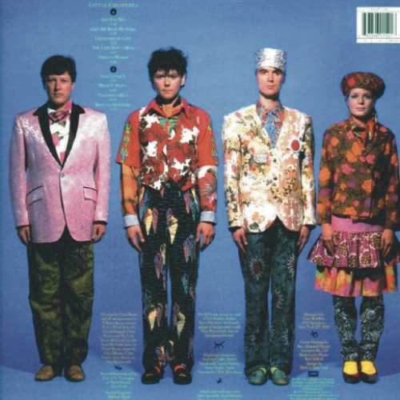
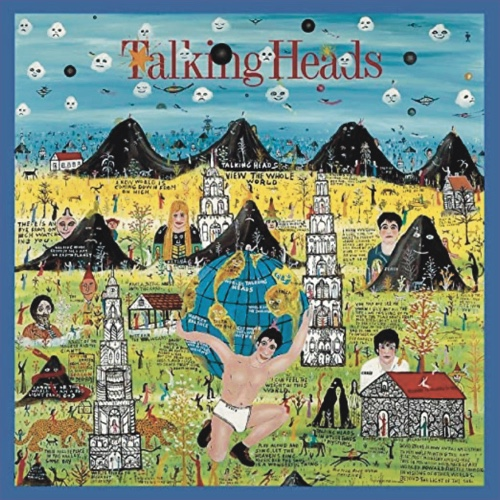
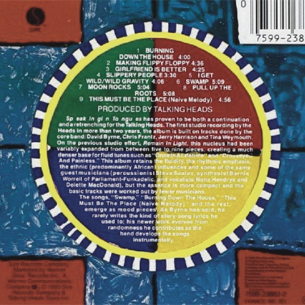
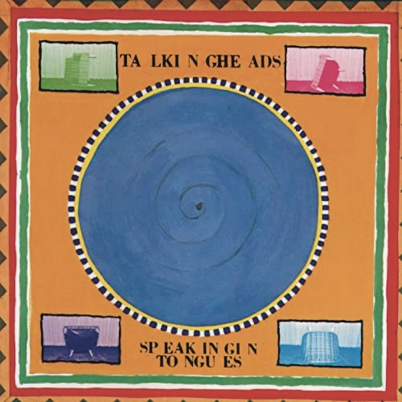

LITTLE CREATURES
Released May 1985
Musicians:
- David Byrne, Vocals
- Chris Frantz, Drums & Backing vocals
- Tina Weymouth, Bass guitar & Backing vocals
- Jerry Harrison, Keyboard
The album was released by Sire Records in the UK and US and Philips Records throughout continental Europe.
In 2005, it was remastered and re-released by Warner Music Group on their Warner Bros./Sire Records/Rhino Records labels in DualDisc format with five bonus tracks on the CD side (see track listing below). The DVD-Audio side includes both stereo and 5.1 surround high resolution (96 kHz/


Side One
- 1. And She Was
- 2. Give Me Back Name
- 3. Creatures of Love
- 4. The Lady Don't Mind
- 5. Perfect World
Side Two
- 6. Stay up Late
- 7. Walk it Down
- 8. Television Man
- 9. Road to Nowhere
The cover art was created by outsider artist Howard Finster, and was selected as album cover of the year by Rolling Stone.
"I wanted to write a song that presented a resigned, even joyful look at doom," recalls David Byrne in the liner notes of Once in a Lifetime: The Best of Talking Heads. "At our deaths and at the apocalypse... (always looming, folks). I think it succeeded.
Talking lads
the best album of the year in The Village Voice Pazz & Jop critics poll.
SPEAKING IN TOUNGES
Released May 1983
Musicians:
- David Byrne, Vocals
- Chris Frantz, Drums & Backing vocals
- Tina Weymouth, Bass guitar & Backing vocals
- Jerry Harrison, Keyboard
Speaking in Tongues is the fifth studio album by American rock band Talking Heads, released on June 1, 1983, by Sire Records. After their split with producer Brian Eno and a short hiatus, which allowed the individual members to pursue side projects, recording began in 1982. It became the band's commercial breakthrough and produced the band's sole US top-ten hit, "Burning Down the House".


Side One
- 1. Burning Down the House
- 2. Making Flippy Floppy
- 3. Girlfriend Is Better
- 4. Slippery People
- 5. I Get Wild
Side Two
- 6. Swamp
- 7. Moon Rocks
- 8. Pull up the Roots
- 9. This Must Be the Place
- 10. Two Note Swivel
David Fricke lauded the album's crossover nature, calling it "the album that finally obliterates the thin line separating arty white pop music and deep black funk."
All tracks are written by David Byrne, Chris Frantz, Jerry Harrison and Tina Weymouth.
Talking Heads frontman David Byrne designed the cover for the general release of the album. Artist Robert Rauschenberg won a Grammy Award for his work on the limited-edition LP version.
Byrne has said, as a partial explanation of the album's title, "I originally sang nonsense, and ... made words to fit that. That worked out all right."